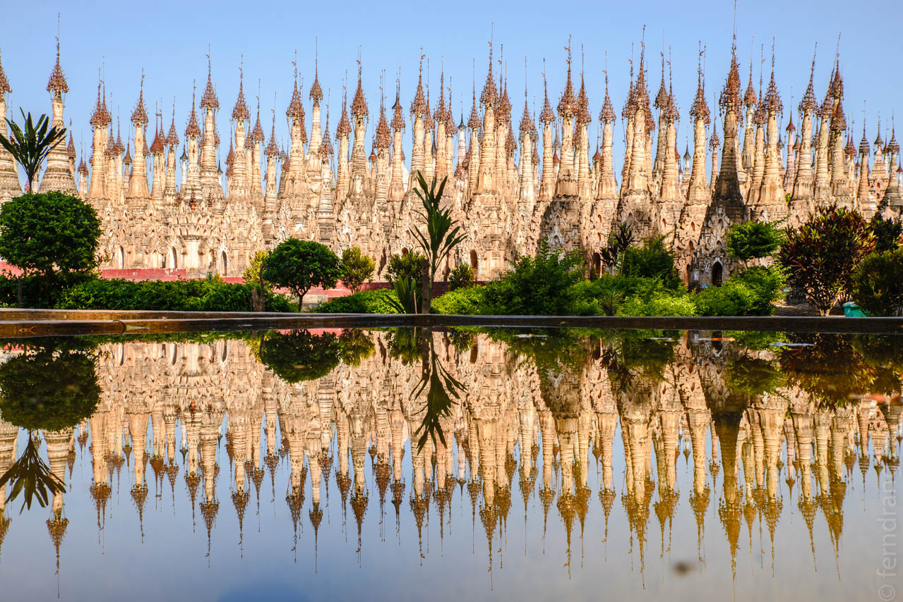
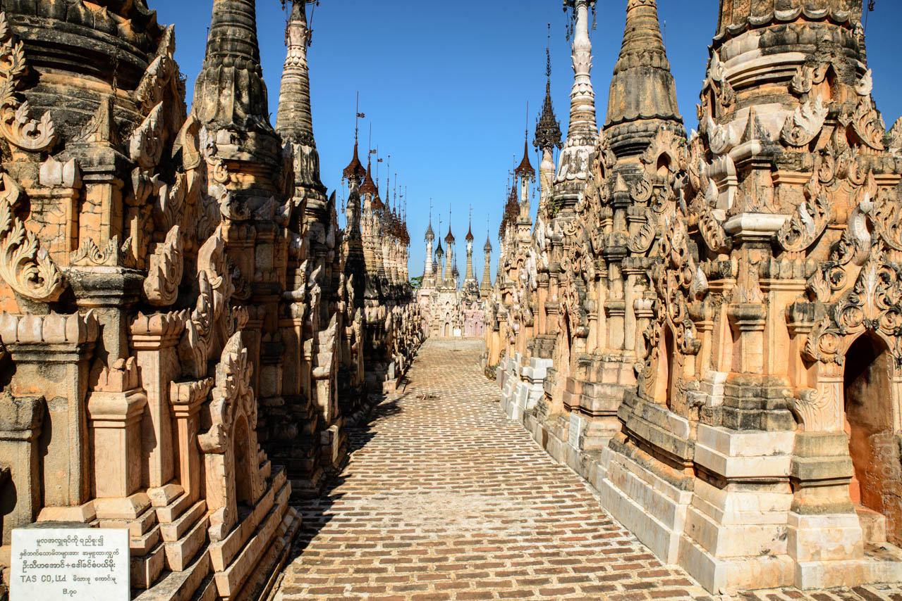
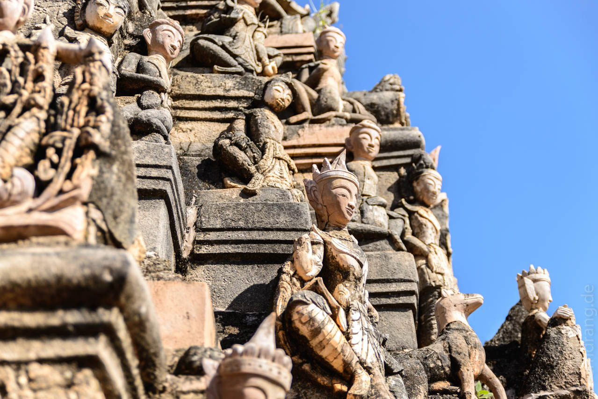
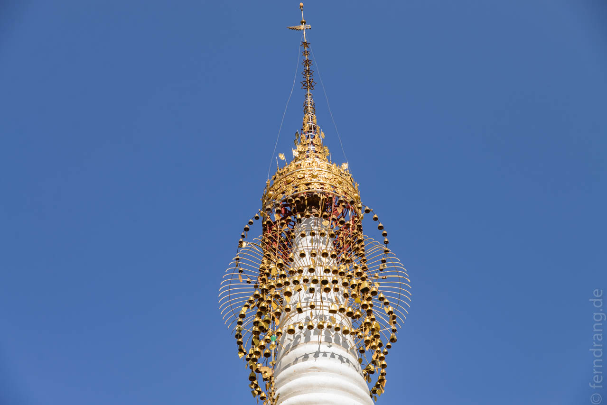

27. Dezember 2013
Kakku
Ein lohnenswerter Ausflug am Inle-See führt nach Kakku. Der Ort war lange für Reisende nicht geöffnet. Das Volk der PaO, zu deren Heiligtümern er gehört, haben die Verwaltungshoheit inne und machen immer noch etwas Getue darum. So muss man zuerst nach Taunggy, wo man Eintritt bezahlt und einen PaO-Führer nehmen muss. In unserem Fall war das ein junges Mädchen in traditioneller Tracht.
Taunggy liegt hoch über der Inle-Ebene über einen Bergrücken erstreckt und ist die größte Stadt in der Region. Wir haben uns von unserer Führerin auf Rat unseres lustigen Guesthouse-Betreibers über den (Haupt-)Markt führen lassen. Er erstreckt sich über ein großes Gelände und hat zahllose Stände. Die Mengen an reifen Avocados, so groß wie Mangos, und frischen Papayas lassen deutsche Supermarktkunden vor Neid erblassen.
Nach einer weiteren Stunde Fahrt nach Süden liegt das Pagoden-Feld Kakku an der Straße – ein majestätischer Anblick! In einem rechteckigen Feld, größer als ein Fußballplatz, tummeln sich über 4.000 rosafarbene, alte Stupas. Auch hier ist einiges verfallen und wieder aufgebaut worden, aber man hat bei der Renovierung darauf geachtet, den alten Stil beizubehalten. Die Stupas haben die landesüblichen, geschmückten Schirme mit kleinen Glöckchen daran. Wenn der Wind über den Hügel weht, ermahnt uns das hundertfache, helle Klingeln Gutes zu tun.
   Auf dem Rückweg waren wir in einem PaO-Dorf. Das Leben hier ist extrem einfach. Was nicht selbst hergestellt wird, wird getauscht. Die Leute vertrauen dem Geld so wenig, dass sie etwaige überschüsse lieber in Goldschmuck anlegen.
An den Hängen unterhalb Tanggys gibt es noch ein Weingut. Das Restaurant ist toll gelegen und der Blick über die Weinberge mit der im Dunst verschwindenden Ebene dahinter ist geradezu unwirklich. Der Wein ist am Inle-See aber leckerer.